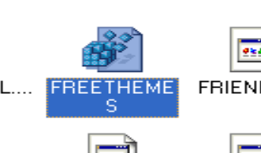
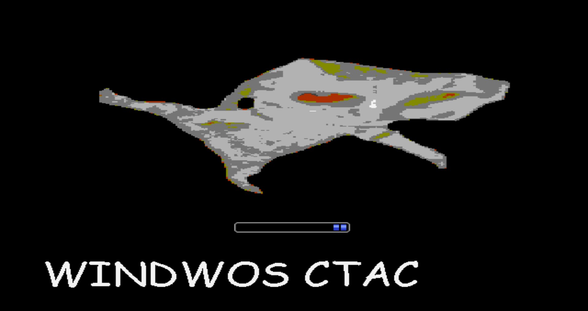
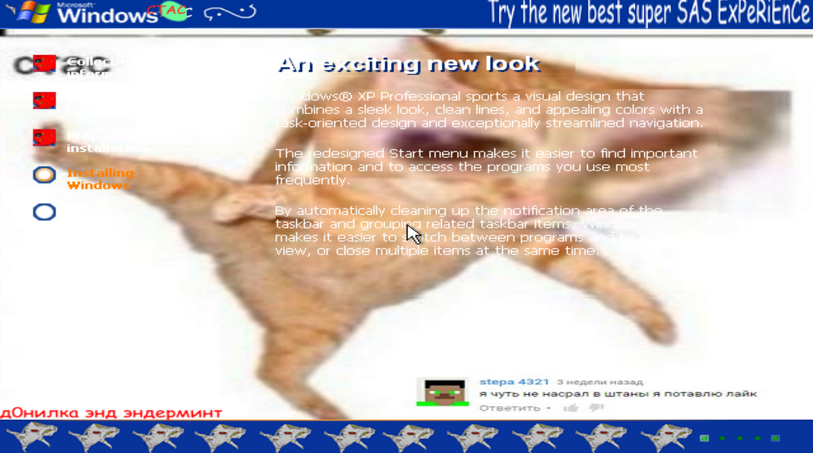
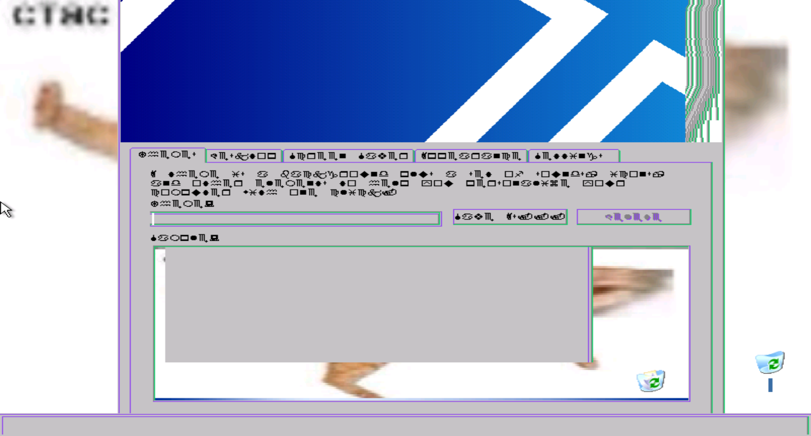
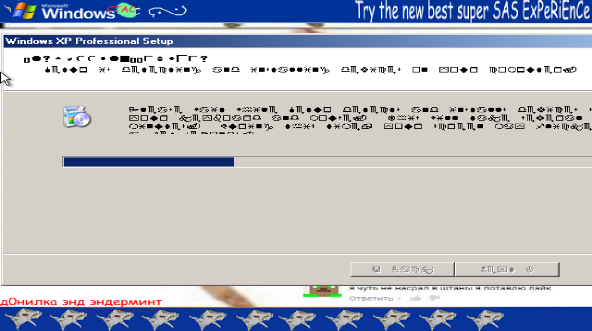

WINDOWS CTAC
WINDWOS CTAC is AN opratring sysne, which lets you experience new stuff
it contains cool free themes and it's really easy to use!
Microsoft used our system to create their Windows XP product too!
Download WINDOWS CTAC TODAY!!!!
Creators: Enderman and Daniel Myslivets with the help of our Discord community!
SADLT CTAC HAVE BEEN DISCONTINUED BUT YOU STILL CAN DONLOAD IT AND YEAH JUST ENJHOY IT THANK U!!!!
DOWNLDOAD
SOF TWARE REPOS ITTRTONEY for WINDOW S CTAC!!!!
CREATE YOUR OWN SOFTWARE FOR WINDOWS CTAC AND SEND IT TO OUR DISCORD SERVER!!!!!!!! HTTPs://ENDERMAN.CH/DISCORD!!!!!!!! ( I DO NOT OWN A DIS. CORD. SERVER ANYMORE)))
CTAC ON SCREEN KEYBROAD by KITTYLE >> download
CLCIK THE CTAC by GOGO268 >> download
Curstomize youe WIndows CTAC now (Official theme pack) >> download
Curstomize your WIndows CTAC even more (Official theme pack) >> download
IMAGE GAlLERY:/1h1>





DOWNLOAD NOW